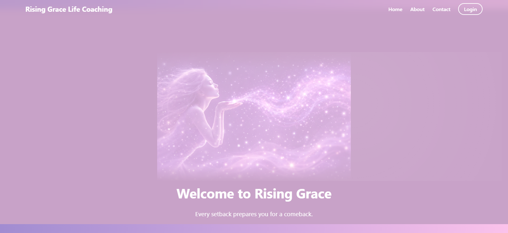
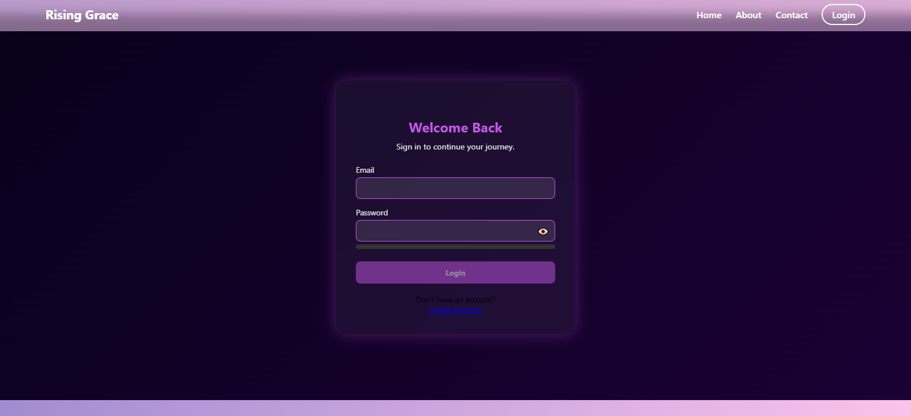
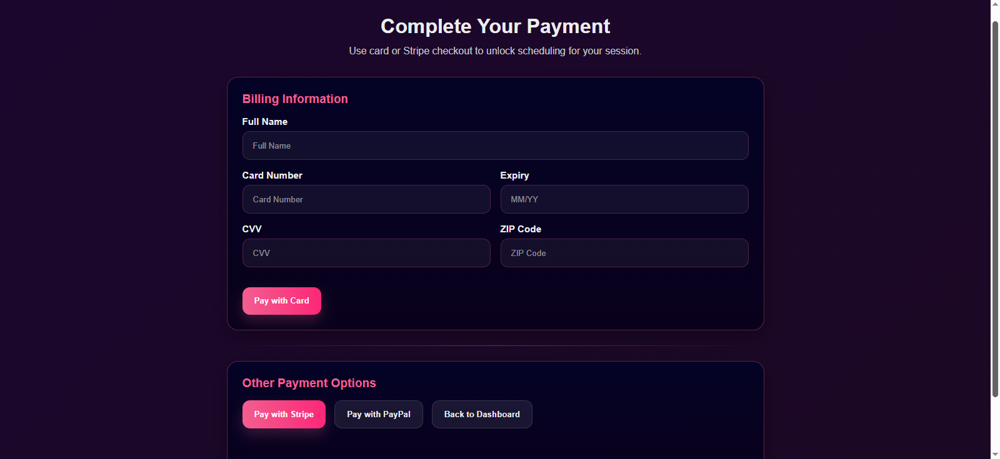

Global Theme Foundation
* {
margin: 0;
padding: 0;
box-sizing: border-box;
font-family: "Segoe UI", sans-serif;
}
body {
background-color: #C8A2C8;
min-height: 100vh;
}The project uses a consistent reset and lilac brand foundation across public-facing pages.

Responsive Navigation
.navbar {
position: fixed;
top: 0;
width: 100%;
background: rgba(200, 162, 200, 0.65);
backdrop-filter: blur(10px);
display: flex;
justify-content: space-between;
align-items: center;
}The navigation uses a fixed glass-style header to keep movement between pages simple and consistent.

Payment Form Visual System
.payment-container {
max-width: 860px;
margin: 0 auto;
padding: 30px;
border-radius: 18px;
}The payment screen uses large form spacing and dark UI contrast to make checkout feel separate from regular content.
